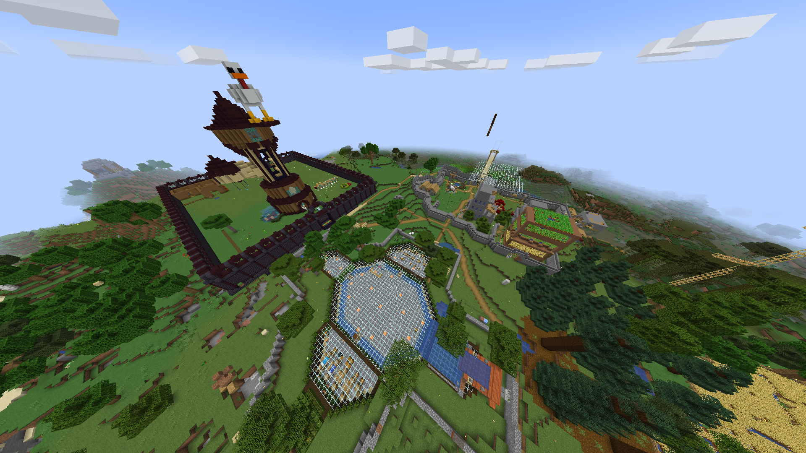

Important information about the world downloads: These worlds ran on Paper Minecraft (a very efficient server jar that we’ve used for awhile). This means that the Nether and End dimension data has been moved to a location that Vanilla Minecraft will not recognize. With that being said, this is fairly easy to fix. First, you will want to extract the zip file (you can do this in your downloads folder). Then go into the newly extracted folder. You should see, among other things, two files that look like “[world name]_the_nether” and “[world name]_the_end”. Simply rename “[worldname]_the_end” to “DIM1”, and rename “[worldname]_the_nether” to “DIM-1”. Finally, move both the newly named “DIM1” and “DIM-1” files inside the plain “[worldname]” folder. You have now successfully reformatted the world downloads, and you can now drop the entire folder (not the subfolders, but the folder that was created when you extracted the zip) into your .minecraft/saves folder. If you don’t know how to do this, there is a handy guide HERE. Additionally, you may have to scroll down on your Minecraft single player client before you see the world download.
The OG world

The very first world! I beleive this was also the longest running world,
and it also had the weird cold war role play. The screenshot has the Addidas HQ,
Tommy's floating island, my mansion, Jinx's farmland, Megan's island, and Kate's
tower. The world folder name is the weirdest, with it being just keyboard spam (nim you
have no idea how big of a pain that has been lol) so be aware of that.
Download size: ~829Mb
File Name: kjafdkahesf
Minecraft version: 1.16.x
Amplified world
This was the short lived amplified world. We thought this would be a good idea. It
was not. At least not for me. I died so much. Nonetheless, you guys did
put some serious work into it, and so it is here to be downloaded. Speaking of downloading:
This is going to take awhile to download. Something about it being amplified made it a
MASSIVE world download. I would recommend having it download overnight if you can.
Download size: 4,581Mb (thats a lot lol)
File name: StillNotAmplified
Minecraft version: 1.16.x?